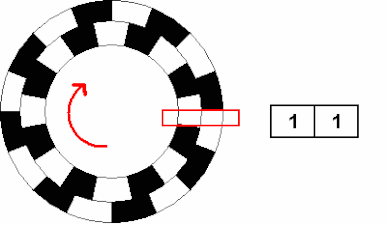
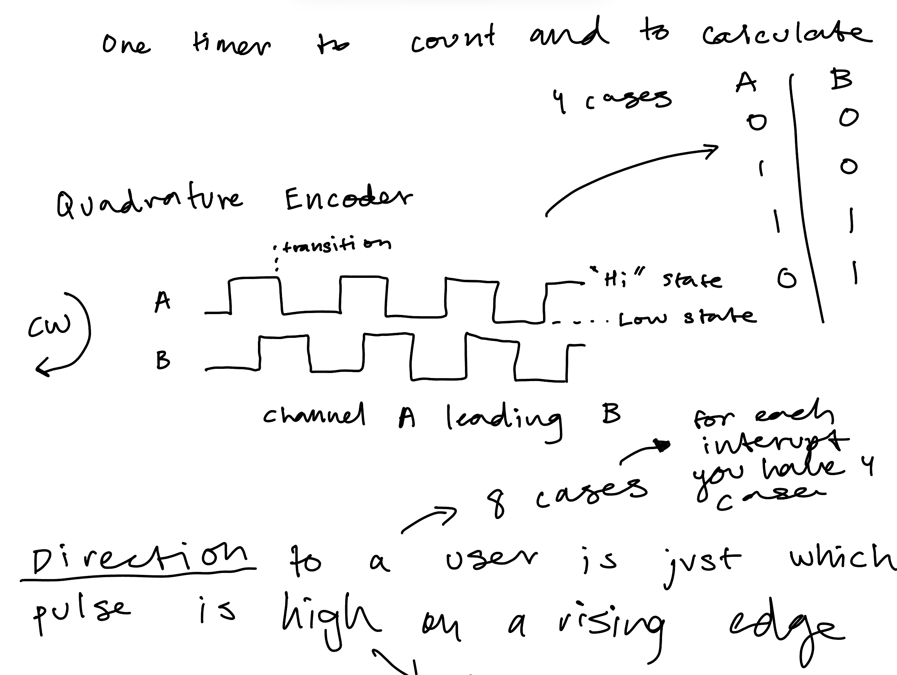
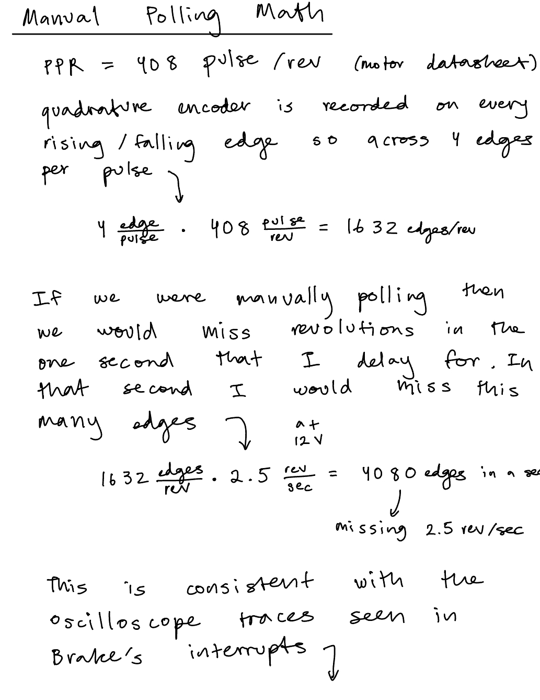
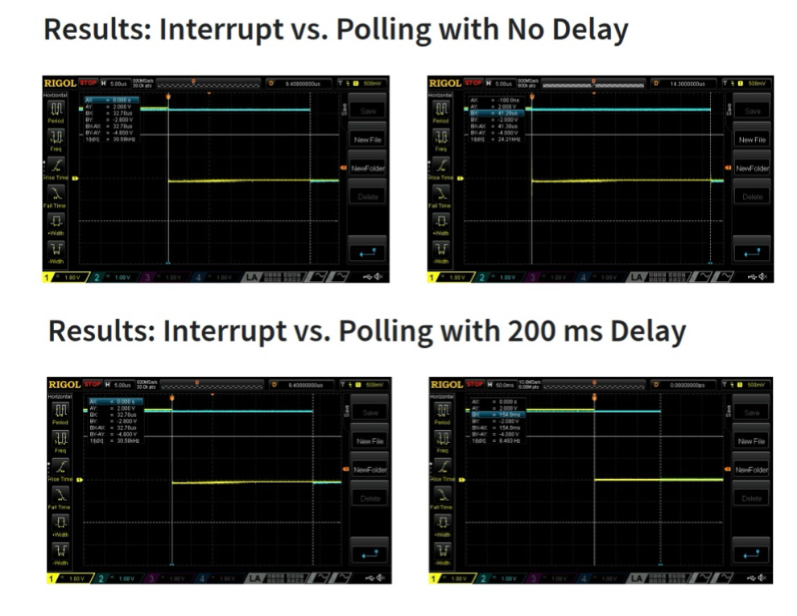
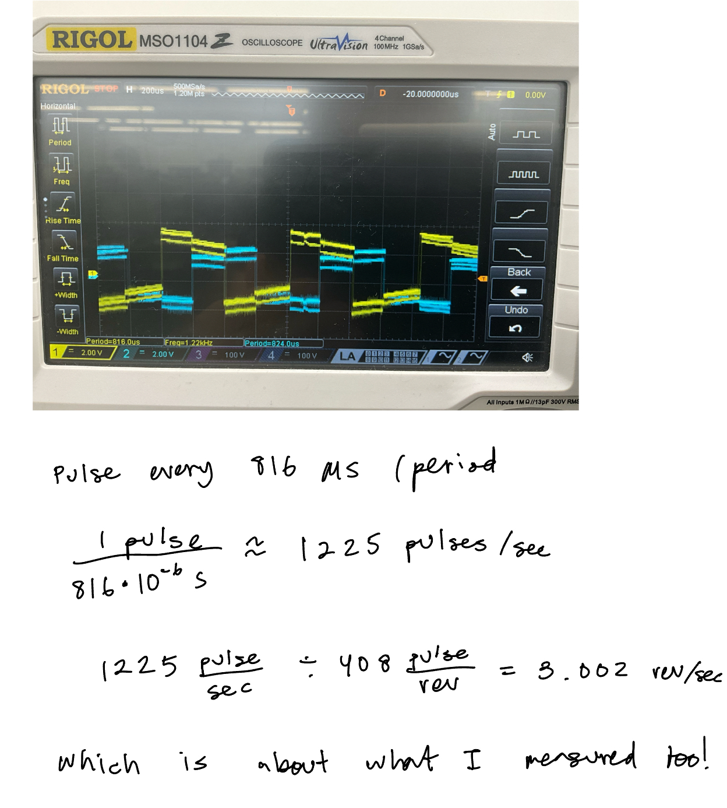
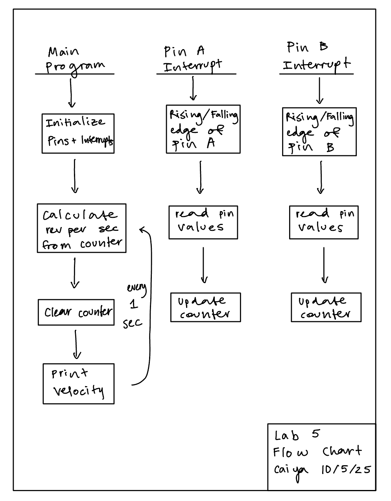
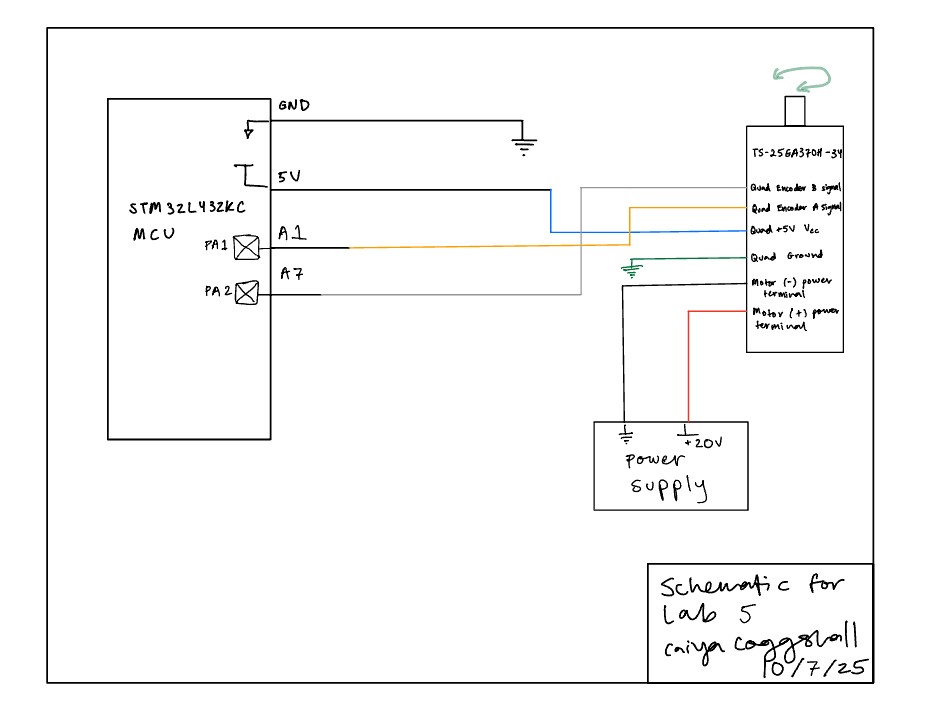

Lab 5 : Interrupts
Introduction
The purpose of this lab was to use the MCU to determine the speed of a given moto by reading from a quadrature encoder using interrupts.
Project Details
Design and Testing Methodology
What is a Quadrature Encoder?
A quadrature is a sensor that supports the movement of an mechanical design. It does this with two channels: Channel A and Channel B.
Using these channels, the controller can sense direction based on the phase relationship between the two channels.
It additionally produces a position signal that is produced once per complete revolution.
Each channel provides equally spaced pulses per revolution (PPR) which in this case was 408 pulses per revolution for our motor.
Defining Counter for Direction
When defining the counter for direction, we had defined that CW (clockwise) motion would correspond to a positive velocity and a CCW (counter clockwise) motion would correspond to a negative velocity.

The quadrature encoder sees which channel is leading through what we can think of as a truth table. When A is leading and “Hi”, B is “Low”, then when A is falling “Low”, we see B is “High”, in these cases we would say A is leading and thus clockwise (CW, positive). When B is leading the quad encoder is spinning CCW (counter clockwise, negative) which we see when B != A (same as when A is leading). If B=A and A is leading then it’s spinning CCW and if B is leading then it’s spinning CW.
We are running the interrupts on every rising and falling edge of Pin A and Pin B which is why in compute_velocity() we divide by 4 to not quad count those interrupts.

Latency of Polling vs Interrupts
We chose to do interrupts in our design opposed to manual polling.
Interrupts are generally preferred over manual polling because it doesn’t create blocking routines and has a much faster response. When triggered, the interrupt jump to another service routine while pausing the main program. Thus, the only time that is lost is during that jump period. Interrupts essentially allow you to multi-task.
Manual Polling is more simple to implement and predictable. The system checks the data at different intervals. However, when calling on functions like delay_millis() you’re in “blind time” for 1 second. In that 1 second the main code isn’t stopped and you’re budy in that function so you don’t receive any other signal inputs. The calculations for the missed revolutions/edges can be seen in the Figure below.


Event driven vs Time driven!
The oscilloscope trace and calculations for rev/sec manually can be seen in the figure below:

printf
We were provided code to work with the UART peripheral to send debugging logs to our laptops. Instead, we did what I would essentially classify as a print statement: printf. An example would look like:
printf("Hello World %d!\n", i);where d stands for a signed decimal integer, and subbing it for letters like f would indicate a decimal floating point.
Technical Documentations
All the code for the project can be found in the following Github repository.
Flow Chart

Schematic

Results and Discussion
The working motor at 12 V can be seen on video here:
Conclusion
Overall this lab went a lot better than most, not much debugging was needed since I spent most of my time understanding the concepts.
Total time: 14 hours
There were a few bugs that came along the way. The motor was rated for 0V to 12 V but it also needed to hold for voltage up to 20V on the power supply. However, when it was cranked up the velocity computation would freeze at 3 rev/sec. This was because the interrupt code was taking too long to run. At the time I had 4 different if/else if statements for all the different cases I could see (think truth table), i.e when A is 1 and B is 0 and so on. I tried compressing a few ways until eventually I had a single if statement checking if A == B and then an else statement!
Also, the starter code selected the pins as pull ups but it needed to be pull downs in order for the motor to run!
Lastly, I had set my counter to be a uint32_t which meant that it was unsigned and thus recorded as a 2’s complement number. But it was being read as a signed integer so it produced extremely large revolution numbers which wasn’t accurate!
AI Prototype Summary
I used Chat GPT 5 Pro to come up with the following code
``` // globals TIM_HandleTypeDef htim2; volatile int64_t enc_base = 0; // extends 32-bit counter to 64-bit
static void MX_GPIO_TIM2_EncoderPins_Init(void) { __HAL_RCC_GPIOA_CLK_ENABLE();
GPIO_InitTypeDef g = {0};
g.Pin = GPIO_PIN_0 | GPIO_PIN_1; // PA0=A, PA1=B
g.Mode = GPIO_MODE_AF_PP; // AF input for timer
g.Pull = GPIO_PULLUP; // typical for open-collector encoders
g.Speed = GPIO_SPEED_FREQ_HIGH;
g.Alternate = GPIO_AF1_TIM2;
HAL_GPIO_Init(GPIOA, &g);}
static void MX_TIM2_Encoder_Init(void) { __HAL_RCC_TIM2_CLK_ENABLE();
htim2.Instance = TIM2; // 32-bit
htim2.Init.Prescaler = 0;
htim2.Init.CounterMode = TIM_COUNTERMODE_UP;
htim2.Init.Period = 0xFFFFFFFFu; // full 32-bit span
htim2.Init.ClockDivision = TIM_CLOCKDIVISION_DIV1;
htim2.Init.AutoReloadPreload = TIM_AUTORELOAD_PRELOAD_DISABLE;
TIM_Encoder_InitTypeDef enc = {0};
enc.EncoderMode = TIM_ENCODERMODE_TI12; // count on both TI1 & TI2
enc.IC1Polarity = TIM_ICPOLARITY_RISING; // set both to RISING; encoder mode handles direction
enc.IC1Selection = TIM_ICSELECTION_DIRECTTI;
enc.IC1Prescaler = TIM_ICPSC_DIV1;
enc.IC1Filter = 4; // small digital filter (0..15); increase if lines are noisy
enc.IC2Polarity = TIM_ICPOLARITY_RISING;
enc.IC2Selection = TIM_ICSELECTION_DIRECTTI;
enc.IC2Prescaler = TIM_ICPSC_DIV1;
enc.IC2Filter = 4;
HAL_TIM_Encoder_Init(&htim2, &enc);
// Enable update interrupt (fires only on overflow/underflow)
__HAL_TIM_CLEAR_FLAG(&htim2, TIM_FLAG_UPDATE);
__HAL_TIM_ENABLE_IT(&htim2, TIM_IT_UPDATE);
HAL_NVIC_SetPriority(TIM2_IRQn, 1, 0);
HAL_NVIC_EnableIRQ(TIM2_IRQn);
HAL_TIM_Encoder_Start(&htim2, TIM_CHANNEL_ALL);}
// Call this from startup code after HAL_Init() void Encoder_Init(void) { MX_GPIO_TIM2_EncoderPins_Init(); MX_TIM2_Encoder_Init(); }
// Standard HAL IRQ shim: void TIM2_IRQHandler(void) { HAL_TIM_IRQHandler(&htim2); }
// Overflow/underflow callback: extend 32-bit TIM2->CNT to 64 bits void HAL_TIM_PeriodElapsedCallback(TIM_HandleTypeDef *htim) { if (htim->Instance == TIM2) { if (__HAL_TIM_IS_TIM_COUNTING_DOWN(htim)) { enc_base -= (int64_t)0x100000000ULL; // underflow (downwards) } else { enc_base += (int64_t)0x100000000ULL; // overflow (upwards) } } }
// Read absolute position (thread-safe snapshot) int64_t Encoder_GetPosition(void) { uint32_t cnt = __HAL_TIM_GET_COUNTER(&htim2); __disable_irq(); int64_t base = enc_base; __enable_irq(); return base + (int64_t)cnt; }
```
It called upon a few nonexisting registers and even with all my code it didn’t compile.
However, I did ask it about the differences between manual polling and interrupts and it gave me a very descriptive explanation there which I really appreciated.